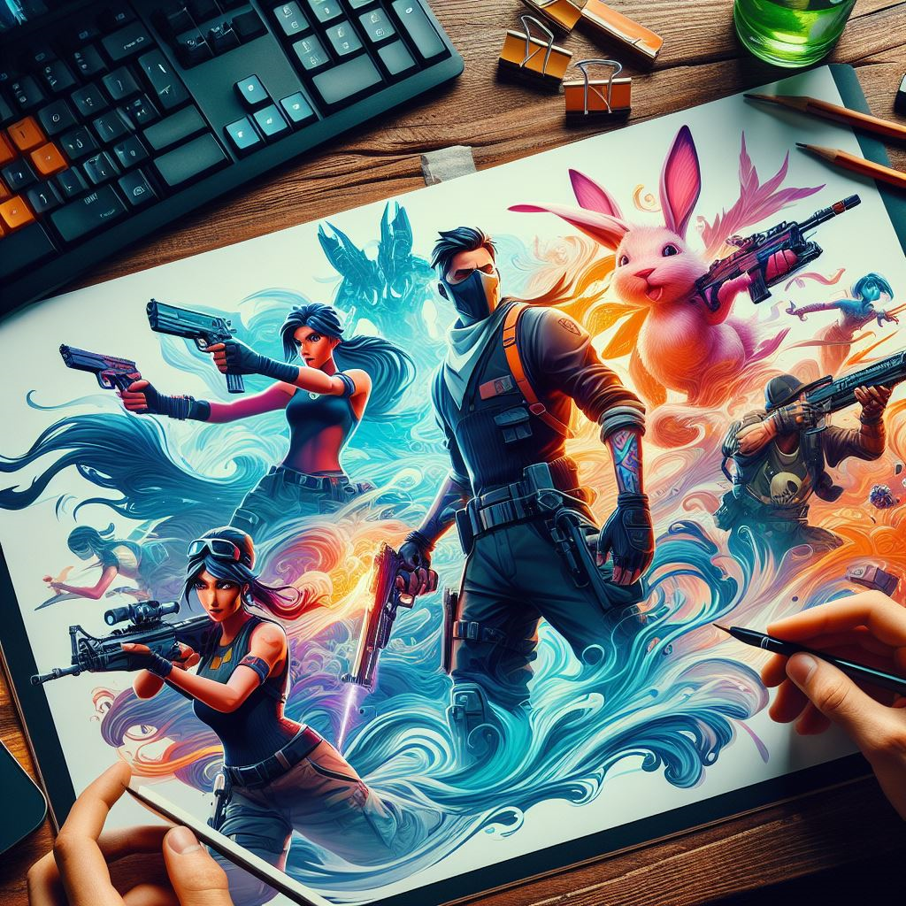

First of all, I should say that I'm trying to develop my imagination here, and you may see some semi-finished designs.
That would be a sign that we are looking at this page simultaneously.
So,
Hi Again 😀
Stephen Moffat once said: "You don’t have ideas – they just let you know when they’re ready."
I will reflect them here, but I need to get prepared for them.
Creating this channel was their first order ...
The Art of Game Design Lectures
Sometimes a glance, an endeavor, or a story can be so inspiring and mesmerizing that it leaves you unable to think about anything else. This book had the same effect on me. It offers a new perspective that encourages us to look more closely and patiently at our own creations and those of others. Ultimately, it inspired me to create this channel and discuss game design. The basis for most of my thoughts is this wonderful book "The Art of Game Design" by Jesse Schell.

Choosing an Idea
An idea that is not dangerous is unworthy of being called an idea at all.
— Elbert Hubbard
There are few people in life who do not appreciate information. Since childhood, knowing the location of food and toys is considered a competitive advantage, but sometimes we don't know if we should reveal this information or not.
In countries where credit cards are encrypted, the knowledge of your 4-digit number is seen as information that conceals your financial worth and credit from the public while revealing it to a specific individual. This realization was perhaps the initial inspiration that propelled me to pursue a significant and earnest concept, aiming to present something to the world that I am confident would have brought more joy to my 14-year-old self as I explored the world.
I still don't know exactly what that thing could be, but I guess it's a serious game that the more you learn, the more enjoyable and rewarding it will be at the same time.